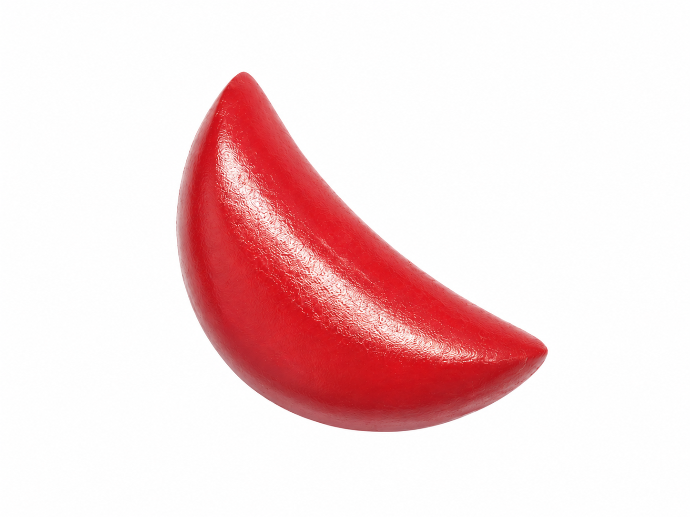
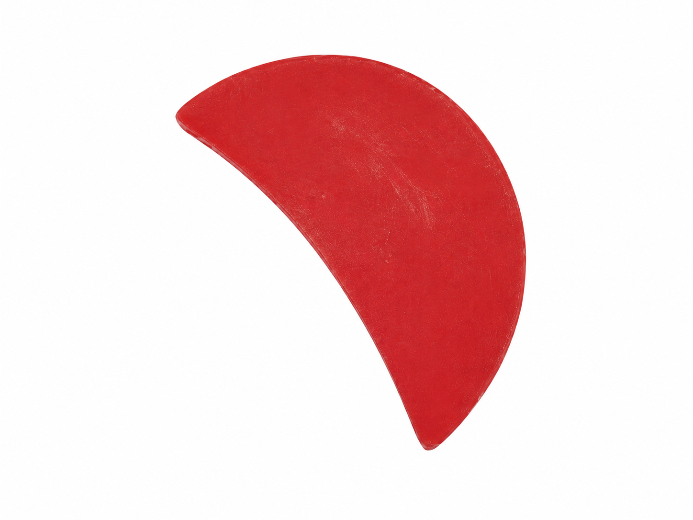

今日黄历
每日运势
正在生成今日宜忌...
宜整理计划
忌冲动决定
吉时辰时 / 午时
财神方位-
贵神方位-
喜神方位-
易经算卦
支持时间、铜钱、数字和手动摇卦，展示本卦、变卦、互卦、错卦、综卦与分领域解读。
起卦方式
已得 0 / 6 爻
手机端可开启后摇一摇掷铜钱，桌面端可直接点击。
基于卦象与传统文化的解读，供参考。
䷀
请选择起卦方式，开始摇卦
支持时间、铜钱、数字和手动四种起卦方法
每日一签
按妈祖庙签筒形式做成六十四签：静心默念所问，抽一支今日签，查看签诗与分项解读。
签文只作传统民俗文化参考，不替代现实判断。
今日签
待抽签静心片刻，默念所问，然后抽一支签。
签筒里共有 64 支签，包含签诗、解曰、事业、财利、感情、出行与生活提醒。
掷圣杯 / 筊杯
虚拟掷杯、三次规则与问题解释，结果包含圣杯、笑杯、阴杯。
手机端可开启后摇一摇掷杯，物件会随力道抛起和落下。
基于民俗文化的解读参考。


敲木鱼
点击木鱼积累功德，平心静气。放下烦恼，自在随缘。
今日功德：0

连续点击可触发功德累积，静心聆听回响
放生积德
将鱼放入池塘，每条鱼都是一份功德。积累善念，心清如水。
每放生一条鱼积累一份功德，鱼在池塘中自由游动。
已放生的鱼
还没有放生鱼
敬香祈福
点燃一炷香，许下一个心愿。烟雾缭绕中，愿所求皆如愿。

手相 AI
上传手掌照片后，算算会调用 AI 生成生命线、智慧线、感情线、事业线的传统文化解读。
选择一张手掌照片
请勿上传他人照片或包含敏感信息的图片。
AI 传统手相解读
上传手掌照片后生成解读。
面相 AI
上传照片后，算算会调用 AI 围绕脸型、额头、眉眼、鼻相、嘴相做文化化描述。
选择一张清晰正面照
不做身份识别，不推断敏感属性。
AI 文化化面相解读
上传照片后生成解读。
风水罗盘
模拟指南针、八卦方位、二十四山与九宫飞星建议，支持户型图上传预览。
▲ 向 180.00° ▲
▼ 山 0.00° ▼
手机上请点“读取设备方向”。如果用局域网 IP 打开，浏览器可能要求 HTTPS。
上传户型图后可叠加方位建议
道教 / 国学内容库
阴阳五行、天干地支、八卦六十四卦、黄历节气与民俗方位的轻量知识卡片。
AI 问答
问任何国学、易经、五行相关的问题
周公解梦
写下梦里出现的人、事、物和醒来感受，算算会用传统象征和大白话帮你整理梦境提醒。
基于传统周公解梦文化的梦境解读。
AI 周公解梦
写下梦境后生成解读。